SELF
INTRODUCTION
King Prithvi
Narayan Shah
How a brave 20-year-old king united more than 50 fighting kingdoms into one strong, beautiful Nepal (श्री ५ बडामहाराजाधिराज पृथ्वीनारायण शाह).
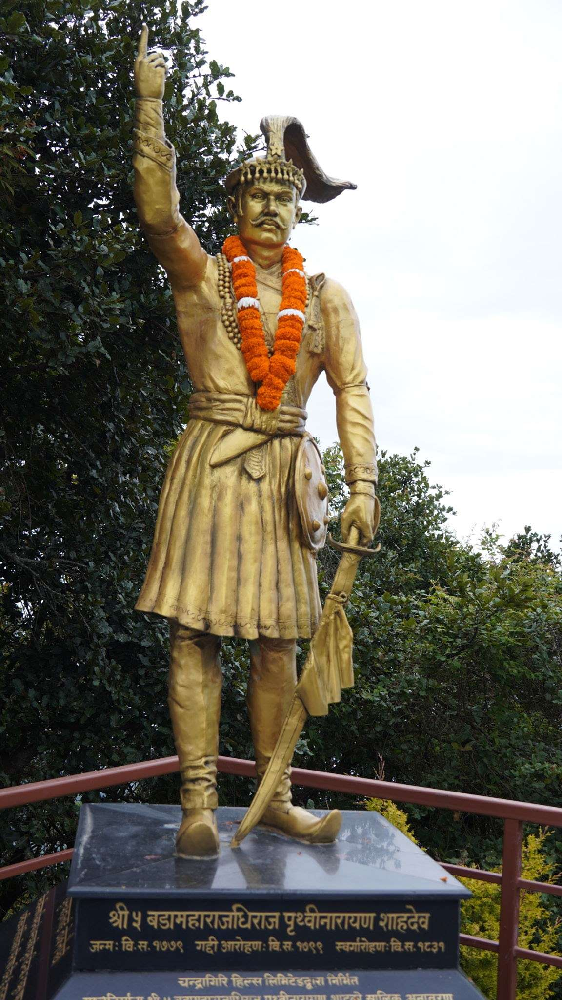
From 50 Kingdoms to 1 Country
Imagine needing a passport and paying customs taxes just to walk from Pokhara to Kathmandu! (बाइसे र चौबिसे राज्य)
Who Was King Prithvi Narayan Shah?
Crowned King of Gorkha in 1799 BS (1743 AD) at just 20 years old! (१७९९ वि.सं. राज्याभिषेक)
Head, crown, and raised finger pointing to the sky! (Tap for Direct Info ➔)
Class Question: What does the raised index finger mean?
Tap the button you think is right:
The Turning Point: Victory at Nuwakot
Nuwakot was the golden gate to Kathmandu Valley and controlled the rich trade route to Tibet (भोट).
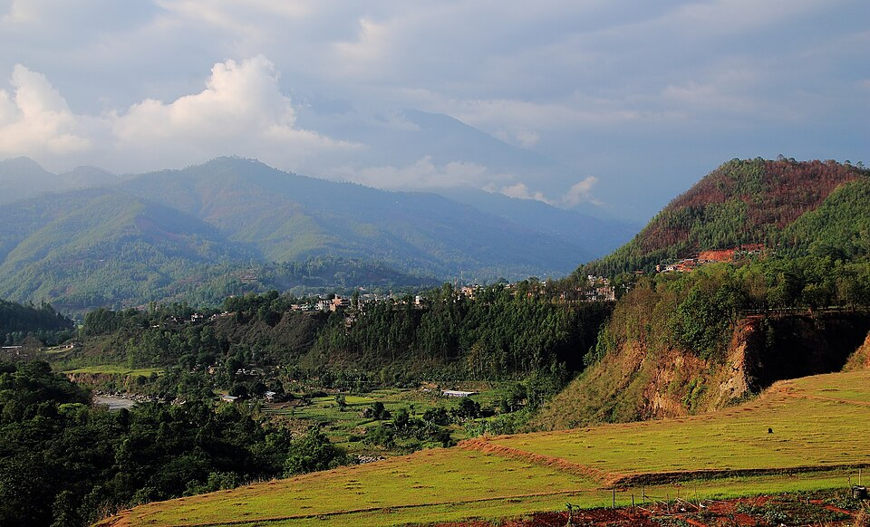
First Try Failed
First attack in 1743 AD was defeated. Did he quit? Never!
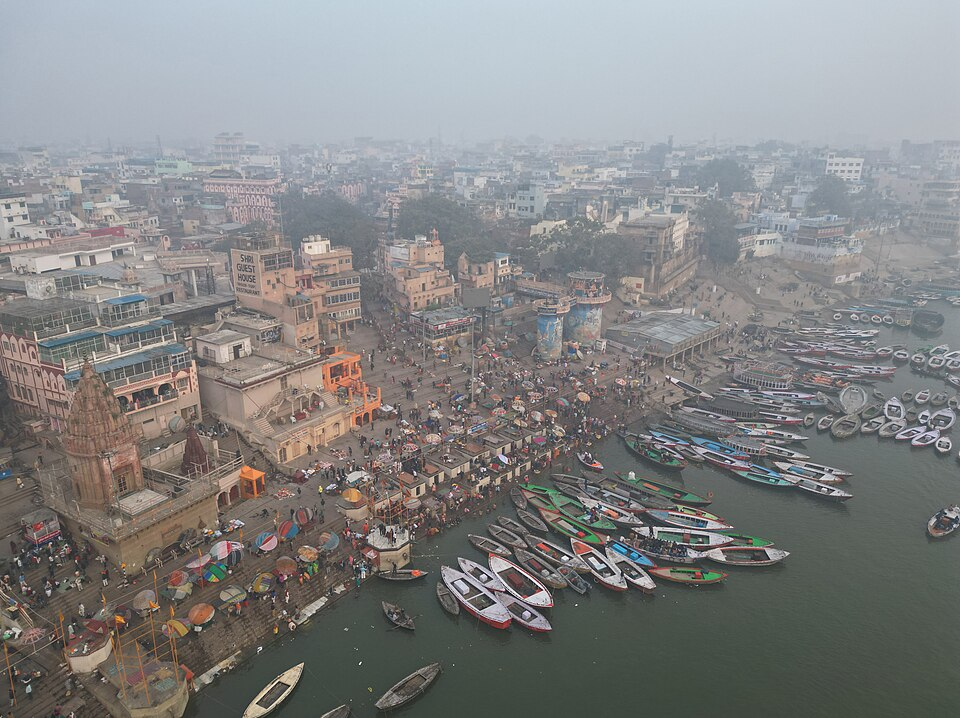
Trip to Banaras
Bought modern flintlock guns & hired skilled blacksmiths.
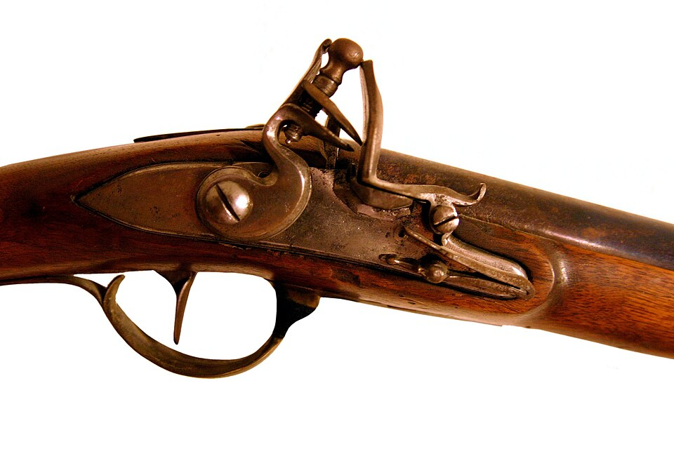
Army Training
Trained army & appointed brave Kalu Pande (कालु पाण्डे) as Kaji.
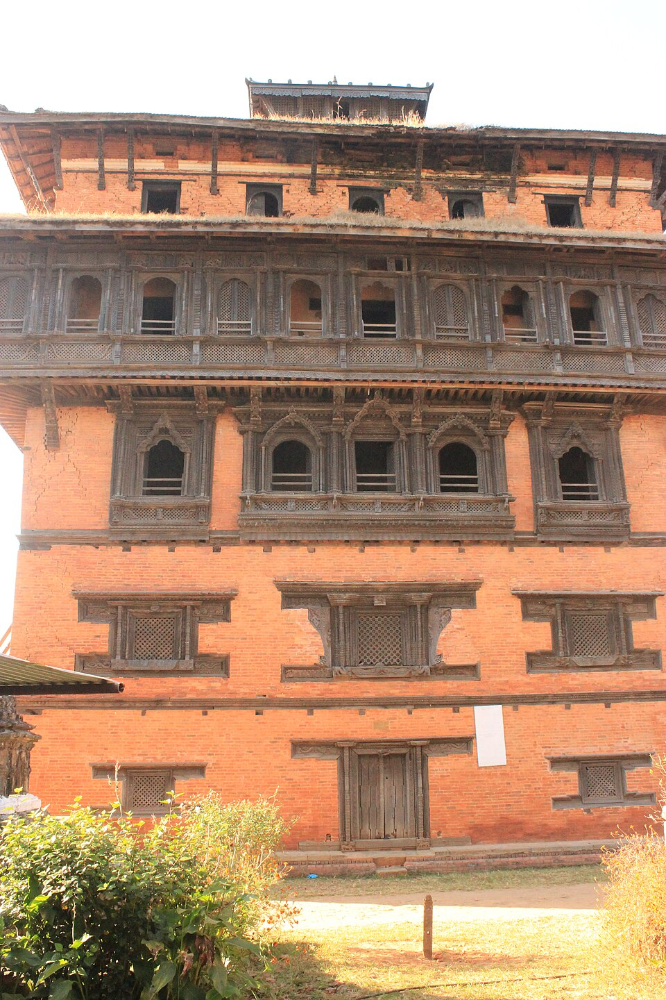
Victory at Nuwakot
In 1801 BS, won Nuwakot fort & opened the valley trade door!
Never Give Up: The 3 Battles of Kirtipur
Kirtipur sat high on steep rocky cliffs. Taking it was the hardest challenge of his life (कीर्तिपुरको लडाइँ).
Fall of Kalu Pande (कालु पाण्डे)
Fierce uphill battle. Brave Commander Kalu Pande died fighting. The King barely survived.
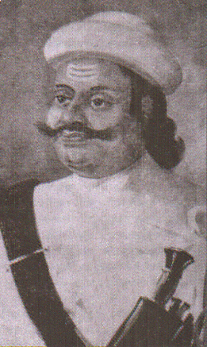
Commander Kalu Pande (काजी कालु पाण्डे)Chief General • Direct Info ➔
Brother Wounded (सुरप्रताप शाह)
His brother Surpratap Shah lost an eye in battle. Gorkhalis retreated, but the King stayed determined.
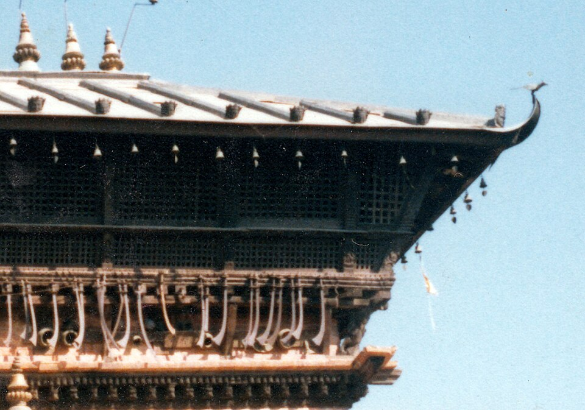
Kirtipur Battle Swords (कीर्तिपुर)Historic battle weapons • Direct Info ➔
6-Month Blockade (आर्थिक नाकाबन्दी)
Surrounded the hill and stopped food and salt for 6 months. In 1822 BS, Kirtipur surrendered peacefully!
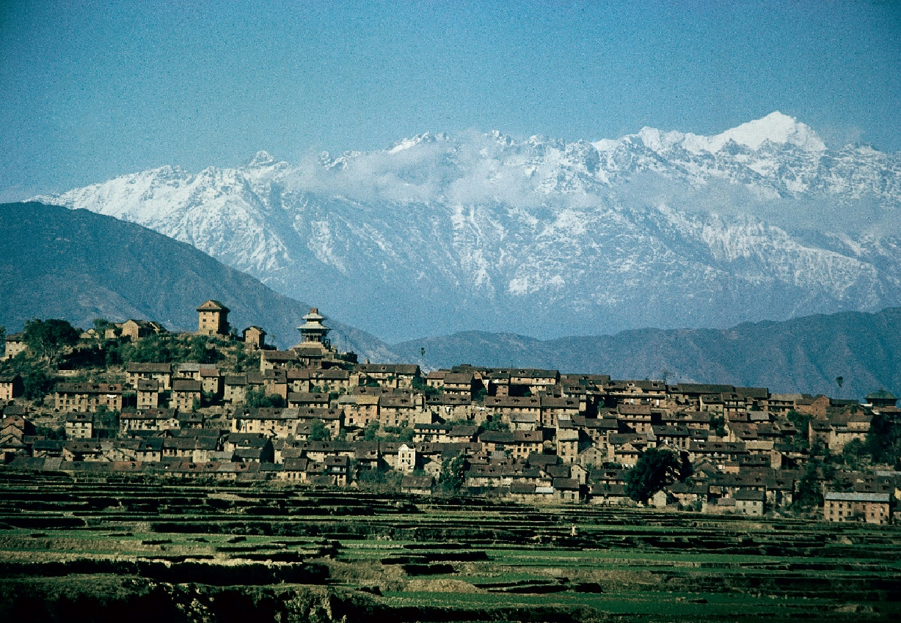
Victory Through PatienceSmart tactics won without climbing. Direct Info ➔
Makwanpur Gateway & Bengal Army Defeat
Capturing the southern gateway fort and defeating General Gurgin Khan (मकवानपुर गढी विजय).
Sealing the Southern Gateway
Makwanpur was the key trade door to India. Captured in 1819 BS (मकवानपुर गढी).
Bengal's Nawab sent General Gurgin Khan with cannons. Gorkhali warriors won in a fierce night battle!
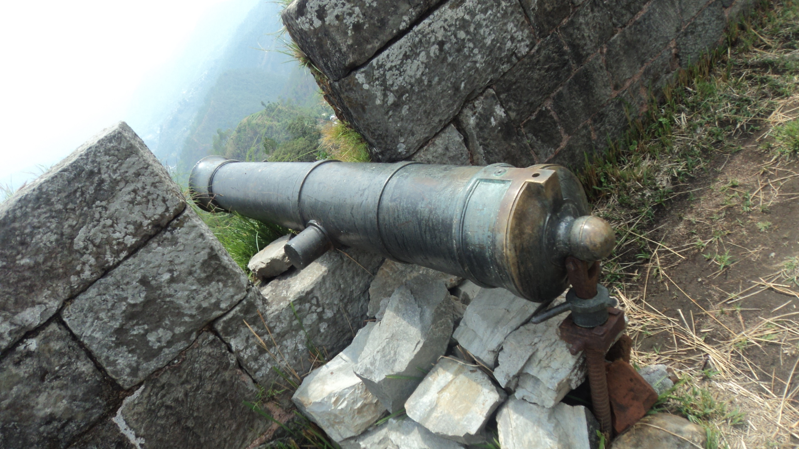
Makwanpur Fort (मकवानपुर गढी)
Southern hill fort & captured cannons • Direct Info ➔
Beating the British Empire at Sindhuli Gadhi
Captain Kinloch brought 2,400 trained British East India Company soldiers with muskets (सिन्धुली गढी).
The Secret Mountain Trap!
Gorkhali warriors ambushed British troops with wild hornet hives (भिर मौरी)!
British Troops Retreated!
Captain Kinloch's 2,400 soldiers fled back to India.
Taking Kathmandu During Indra Jatra
Entering the capital city without hurting people or destroying temples (इन्द्रजात्रामा कान्तिपुर).
Festival Night in Basantapur
During the Indra Jatra chariot festival (रथयात्रा), Gorkhalis entered Kathmandu peacefully.
King Prithvi went directly to Kumari Ghar (कुमारी घर) and received the sacred Royal Tika.
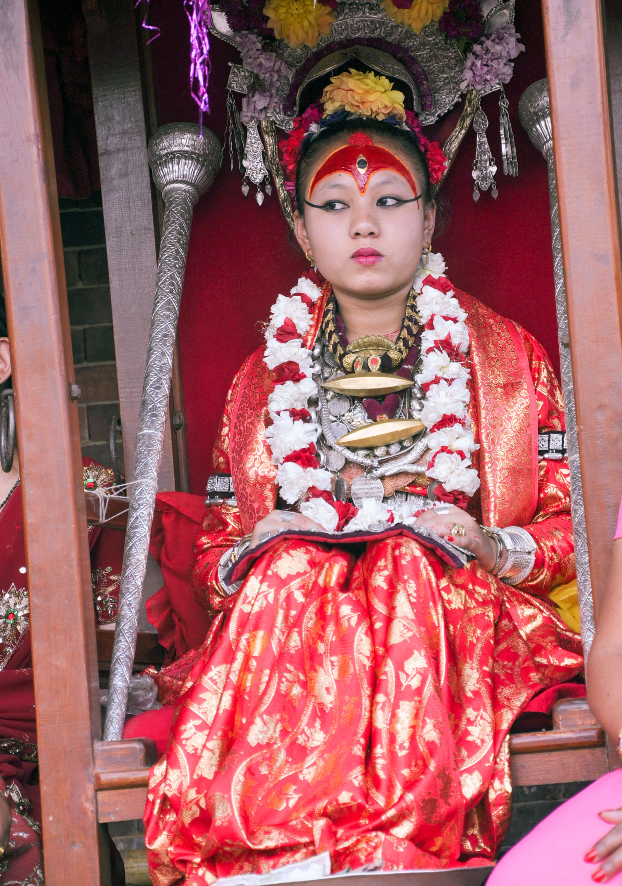
Living Goddess Kumari (श्री कुमारी)
Placed the Royal Tika on his forehead as legitimate ruler. Direct Info ➔
Unification of the Valley: Capital Born
Ending 600 years of Malla dynasty and declaring Kathmandu modern capital (उपत्यका एकीकरण).
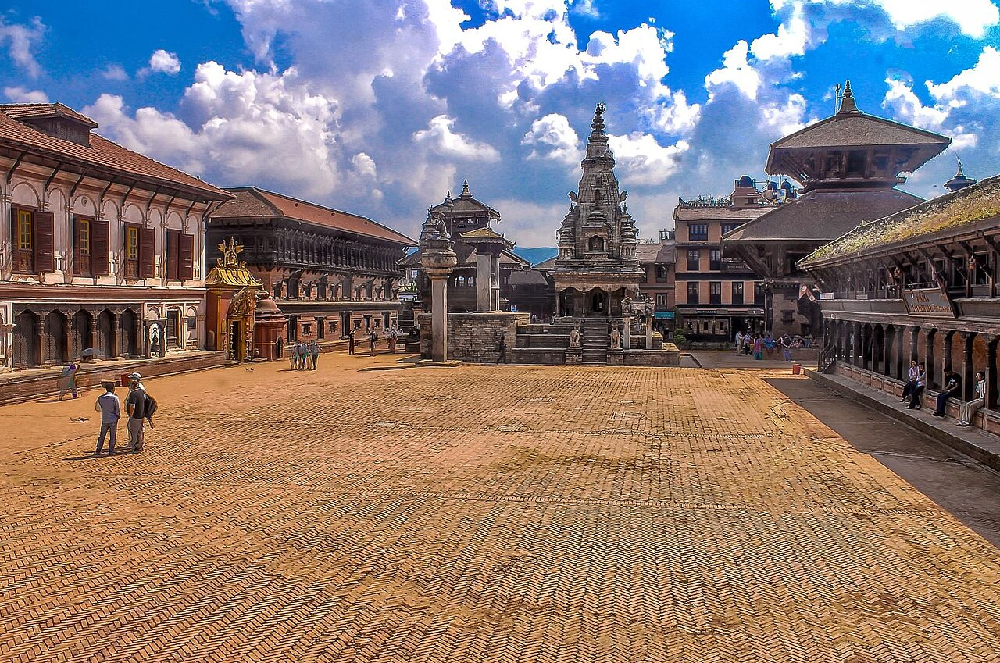
Fall of Bhaktapur (१८२६ वि.सं.)
Patan joined peacefully. In 1826 BS, Bhaktapur united after King Ranajit Malla retired with full honors.
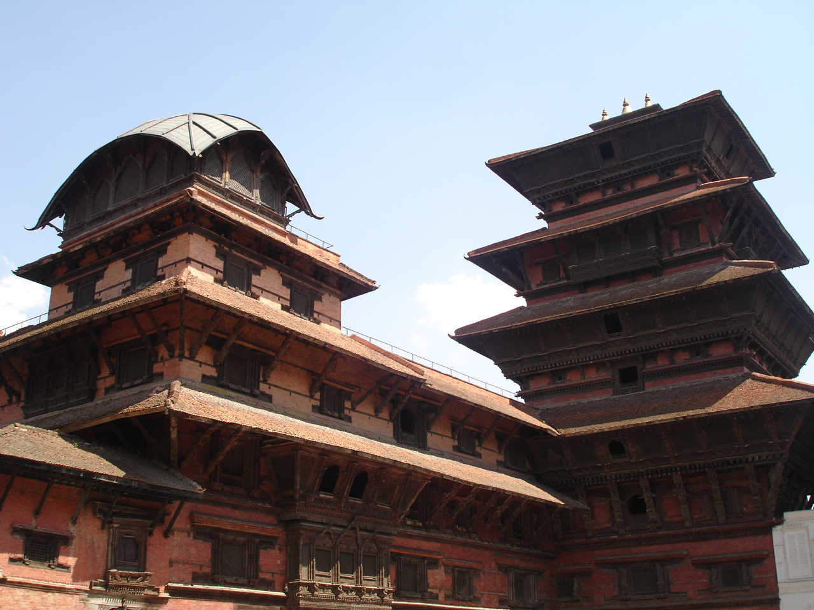
Kathmandu: Capital of Nepal
Declared permanent capital of Modern Nepal (राजधानी). Direct Info ➔
His Golden Teachings: Divya Upadesh
Before passing away at age 52 at Devighat Nuwakot, he gave timeless advice (दिव्य उपदेश).
Maintain friendship and balance with China and India.
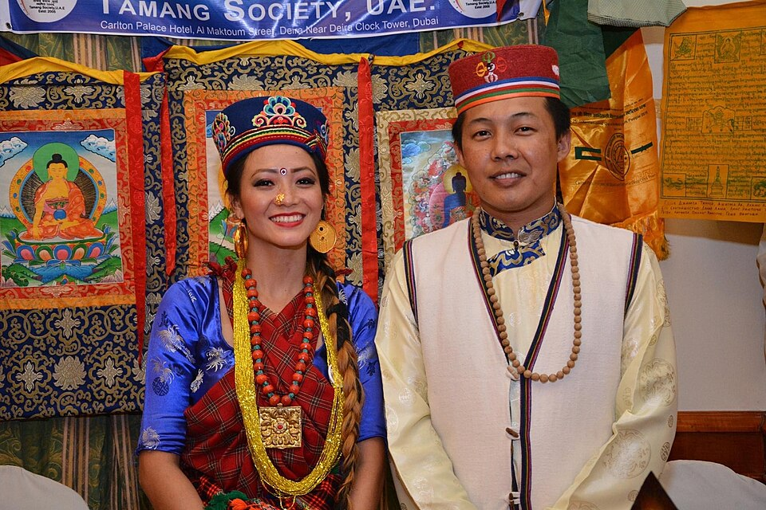
Every culture and caste makes one beautiful garden.
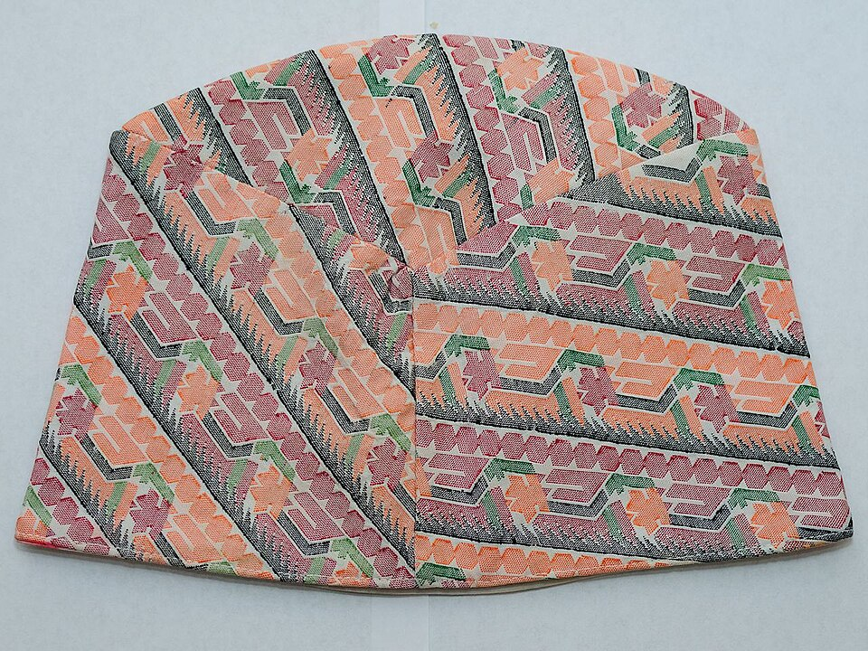
Wear Nepali cloth and keep money inside the country.
Creative Chart Paper Timeline
3 creative ways to display the timeline on your chart paper:
"Stepping Stones to Kathmandu" Trail
A climbing trail from Gorkha Hill to Basantapur Kathmandu.
7 Traditional Flip Shields
Tap any shield to flip and reveal the event underneath:
Crowned King at age 20 in Gorkha.
Won Nuwakot fort; opened trade door.
Patient blockade won the hill fort.
Defeated British troops with hornets.
Peaceful entry; received Kumari's Tika.
Kathmandu made national capital.
Final advice on foreign policy & unity.
The Khukuri Blade Spine (खुकुरीको ढाड)
The curve of the Khukuri blade serves as the timeline axis from handle to tip.
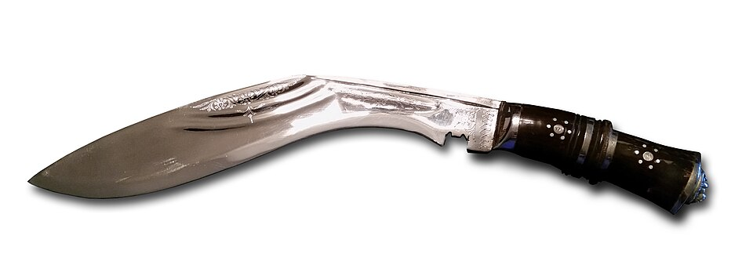
Handle (1799 BS): Crowned King in Gorkha.
Blade Curve (1814-1824 BS): Kirtipur grit & Sindhuli victory.
Sharp Tip (1825-1831 BS): Capital in Kathmandu & Divya Upadesh.
Interactive Classroom Quiz
Tap the right answers on the screen:
Thank You! Any Questions? (धन्यवाद)
Presented by Dipesh • Shree Nirmal Secondary School, Tanahun • English Class Presentation
Big Vision
He saw beyond tiny borders and united 50 kingdoms into one home.
Unstoppable Grit
He suffered big defeats, but always learned, adapted, and tried again.
National Unity
"A common garden of all castes" — unity remains Nepal's greatest superpower.